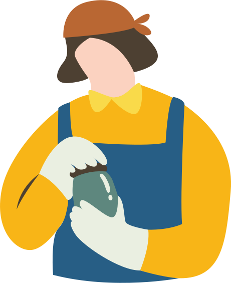
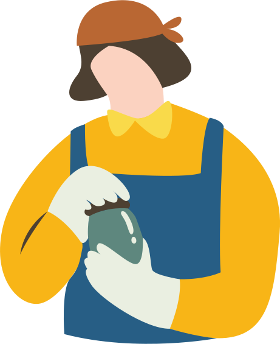

ฝากให้รู้ไว้
ในบั้นปลายชีวิตหลายคนเลือกที่จะทําเกษตรกรรม แต่การจะทํา
เกษตรนั้นไม่ใช่เพียงความอยากทําก็ทําได้เลย นอกจากความรู้ความ
สามารถเรายังต้องมีความมุ่งมัน ตั้งใจที่แน่วแน่ไม่ถอดใจกลางคัน
ไม่เช่นนั้นเราคงได้ ล้มเหลวในสักวันหนึ่งซึ่งเราขอใช้พื้นที่นี้ในการ
กระจายเคล็ดเล็กๆ ที่ไม่ลับให้กับทุกคน
3 ประการจำเป็น
อุดมการณ์
การทำสิ่งใดสิ่งหนึ่งด้วยความมุ่งมั่นตั้งใจ มีความเชื่อ
ว่าการทำเกษตร นำไปซึ่งความมั่นคง เป็นนายตัวเอง
สามารถหาเลี้ยงชีพได้ ไม่อดตาย ทั้งยังเป็นอาชีพที่มี
ศักดิ์ศรี มีปัญหาอุปสรรคก็ไม่ยอมแพ้ พร้อมที่จะเดิน
หน้าไปสู่จุดมุ่งหมาย
วิชาการ
การทำเกษตรด้วยความรู้ความสามารถที่ได้ศึกษา
ร่ำเรียน อย่างถูกต้องมาใช้กับการทำเกษตร และพัฒนา
ต่อยอดให้เกิดประโยชน์มากที่สุด
ประสบการณ์
การใช้ความผิดพลาดหรือสิ่งตนเคยประสบพบเจอ
มาจากการลงมือทำจริงด้วยตนเอง ซึ่งจะได้ทั้ง
ความเข้าใจที่ถ่องแท้ถึงเรื่องปัญหาและการจัดการ
เกษตรกรรม และได้นำประสบการณ์ที่ได้ส่งต่อให้
กับผู้อื่นได้อีกด้วย
หลักการทำเกษตร
แบบสวนกระแส
การทำเกษตรไม่จำเป็นเป็นต้องปลูกของแพง เราสามารถทำเกษตรแบบผสมผสาน ปลูกผักสวนครัวเน้นใช้งานไม่เน้นขาย จะทำให้มีประโยชน์กว่าการปลูกไร่ตามกระแส ซึ่งมีหลักการดำเนินการ ขั้นตอนดังนี้
การปลูกพืชที่เรากินเองได้
เหลือก็สามารถนำไปขาย
ต่อเรียนรู้ประโยชน์ของพืช
แต่ละชนิดและศึกษาวิธีการ
ปลูก โรคและระยะเวลาการ
ให้ผลผลิต
การปลูกพืชนอกฤดู จะ
ทำให้ผลิตสินค้าออกในช่วง
ที่ขายได้ราคาดีและไม่มีคู่
แข่งทางการตลาด ต้องทำ
อย่างช้าๆ และรอบคอบ
ให้ผลผลิต
ขายหรือแปรรูปผลผลิตเพิ่ม
มูลค่า มีการรวมกลุ่มและ
สร้างศูนย์การเรียนรู้หรือ
แแหล่งท่องเที่ยวเชิงเกษตร
เพิ่มช่องทางหารายได้
| สาเหตุที่ทำเกษตร | 1. ไม่มีความรู้จริงในพืชนั้นๆ |
| แล้วจนลง | 2. ปลูกพืชแปลงเดี่ยว |
| 3. มุ่งแต่ทำขายไม่สนใจทำกิน | |
| 4. ซื้อของที่ไม่จำเป็น | |
| องค์ประกอบที่จะทำให้ | 1. ทำเลหรือฮวยจุ้ย หากติดถนนจะดีมาก |
| ประสบความสำเร็จ | เพราะสามารถ ขายได้ในตัวเลย |
| 2. ปลูกพืชเน้นขายใกล้บ้านเพื่อลดค่า | |
| ขนส่ง และตัดปัญหาพ่อค้าคนกลาง | |
| 3. การทำเป็นแหล่งเรียนรู้เชิงท่องเที่ยว | |
| เกษตรกรรม | |
| แนวทางการแก้ไข | 1. ศึกษาหาความรู้พืชที่ปลูก |
| 2. เน้นคุณภาพไม่เน้นปริมาณ | |
| 3. เน้นเศรษฐกิจพอเพียง | |
| 4. ทำไร่นาสวนผสม | |
| 5. อย่าเน้นทำขาย ให้เน้นทำกิน | |
| 6. รู้ทันโลกวัตถุนิยม และใช้ให้เกิด | |
| ประโยชน์ |


ฝากให้รู้ไว้
ในบั้นปลายชีวิตหลายคนเลือกที่จะทําเกษตรกรรม แต่การจะทํา เกษตรนั้นไม่ใช่เพียงความอยากทําก็ทําได้เลย นอกจากความรู้ความ สามารถเรายังต้องมีความมุ่งมัน ตั้งใจที่แน่วแน่ไม่ถอดใจกลางคัน ไม่เช่นนั้นเราคงได้ ล้มเหลวในสักวันหนึ่งซึ่งเราขอใช้พื้นที่นี้ในการ กระจายเคล็ดเล็กๆ ที่ไม่ลับให้กับทุกคน
3 ประการจำเป็น
อุดมการณ์
การทำสิ่งใดสิ่งหนึ่งด้วยความมุ่งมั่นตั้งใจ มีความเชื่อ ว่าการทำเกษตร นำไปซึ่งความมั่นคง เป็นนายตัวเอง สามารถหาเลี้ยงชีพได้ ไม่อดตาย ทั้งยังเป็นอาชีพที่มี ศักดิ์ศรี มีปัญหาอุปสรรคก็ไม่ยอมแพ้ พร้อมที่จะเดิน หน้าไปสู่จุดมุ่งหมาย
วิชาการ
การทำเกษตรด้วยความรู้ความสามารถที่ได้ศึกษา ร่ำเรียน อย่างถูกต้องมาใช้กับการทำเกษตร และพัฒนา ต่อยอดให้เกิดประโยชน์มากที่สุด
ประสบการณ์
การใช้ความผิดพลาดหรือสิ่งตนเคยประสบพบเจอ มาจากการลงมือทำจริงด้วยตนเอง ซึ่งจะได้ทั้ง ความเข้าใจที่ถ่องแท้ถึงเรื่องปัญหาและการจัดการ เกษตรกรรม และได้นำประสบการณ์ที่ได้ส่งต่อให้ กับผู้อื่นได้อีกด้วย
หลักการทำเกษตร
แบบสวนกระแส
การทำเกษตรไม่จำเป็นเป็นต้องปลูกของแพง เราสามารถทำเกษตรแบบผสมผสาน ปลูกผักสวนครัวเน้นใช้งาน ไม่เน้นขาย จะทำให้มีประโยชน์กว่าการปลูกไร่ตามกระแส ซึ่งมีหลักการดำเนินการ ขั้นตอนดังนี้1. ไม่มีความรู้จริงในพืชนั้นๆ
2. ปลูกพืชแปลงเดี่ยว
3. มุ่งแต่ทำขายไม่สนใจทำกิน
4. ซื้อของที่ไม่จำเป็น
องค์ประกอบที่จะทำให้ประสบความสำเร็จ
1. ทำเลหรือฮวยจุ้ย หากติดถนนจะดีมาก เพราะสามารถ ขายได้ในตัวเลย
2. ปลูกพืชเน้นขายใกล้บ้านเพื่อลดค่า
3. การทำเป็นแหล่งเรียนรู้เชิงท่องเที่ยวเกษตรกรรม
แนวทางการแก้ไข
1. ศึกษาหาความรู้พืชที่ปลูก
2. เน้นคุณภาพไม่เน้นปริมาณ
3. เน้นเศรษฐกิจพอเพียง
4. ทำไร่นาสวนผสม
5. อย่าเน้นทำขาย ให้เน้นทำกิน
6. รู้ทันโลกวัตถุนิยม และใช้ให้เกิดประโยชน์